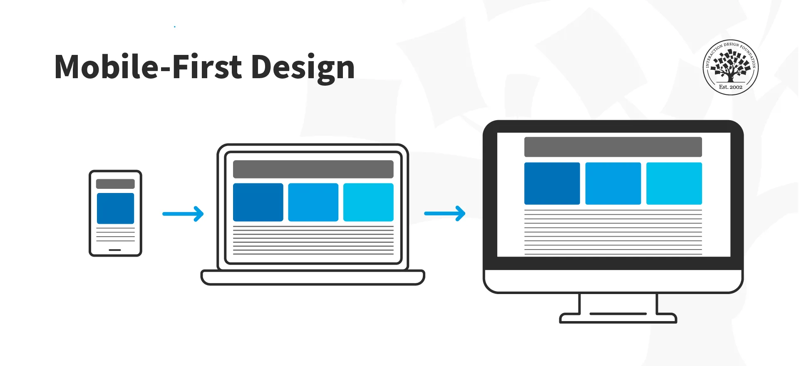

Mobile first
WANDERER | WANDERER | WANDERER WANDERER | WANDERER | WANDERER WANDERER | WANDERER | WANDERER WANDERER | WANDERER | WANDERER WANDERER | WANDERER | WANDERER WANDERER | WANDERER | WANDERER WANDERER | WANDERER | WANDERER WANDERER | WANDERER | WANDERER WANDERER | WANDERER | WANDERER WANDERER | WANDERER | WANDERER WANDERER | WANDERER | WANDERER
Mobile first
Una investigación realizada por la GSMA (Asociacion Global de Sistemas de Comunicación
Móvil) afirma que el uso de internet a tra vés de dispositivos móviles crecerá un 50%
hasta 2020. Estar conectado en internet se volvió parte de nuestro día a día. Poco a
poco estamos dejando de usar la computadora para realizar las tareas cotidianas y
estamos usando cada vez más los smartphones.
En 2015, Google ya hablaba sobre esta tendencia, y priorizó los sitios web que son mobile
friendly (sitios web amigables para dispositivos móviles) en los resultados de las búsquedas.
Los dispositivos móviles garantizan la practicidad que buscamos pero, para que la experiencia
en internet sea buena, es necesario que la navegación sea pensada para estos dispositivos.

Si las personas pasan más tiempo navegando en internet por medio del teléfono móvil; lo más
sensato seria crear primero un sitio web optimizado para los dispositivos móviles.
Pensando en esto Luke Wroblewski (director de productos de Google) en 2011, desarrolló el
concepto Mobile First, cuando publicó el libro Mobile First.
Su propuesta era crear un sitio web pensado primero para dispositivos móviles y después
ajustarlo para la computadora. El modelo Mobile First es una filosofía que perfecciona
el proceso de diseño de cualquier sitio web, buscando mejorar el diseño web adaptable.
Esta nueva forma de diseñar, surge de los dispositivos móviles y de cualquier pantalla
de tamaño menor, en la que se parte de una escala en aumento hasta adaptar el diseño a
pantallas de gran tamaño.
Para aplicar este método, debemos tener en cuenta que todo lo que no sea esencial debe
quedar fuera de nuestro diseño. Para hacerlo debemos pensar en lo que buscan nuestros
consumidores, qué es lo que no puede faltar en ningón caso Y qué es prescindible o superfluo.
Teniendo en cuenta este enfoque de diseño, las dimensiones y capacidades de un móvil y la información
que debemos incluir, podemos pasar al desarrollo de una página web.
Lo primero que se debe hacer es aclarar el contenido básico y separarlo del contenido
sobrante o prescindible.
Al hacer esto, quedará un listado de los elementos esenciales que debe contener la página:
Estos elementos deben decidirse en función de las necesidades de los futuros usuarios.
Puede darse el caso de que ciertos elementos no se logren incluir a la vez en pantalla como el logotipo, el navegador y el buscador, por ejemplo:
Proceso
Cuando la etapa de diseño para un dispositivo de tamaño reducido esta listo, el siguiente paso es estirar la ventana hasta que el diseño empiece a deformarse o a verse mal.
En este momento se deben definir los media queries para pantallas de mayor dimensión.
Mobile First hace más sencilla la tarea de diseñar cualquier página web, de manera gradual el diseño se irá acomodando a los distintos tamaños de pantalla,
adaptando el layout al tiempo. Diseñar a partir de pantallas grandes es menos práctico, requiere más esfuerzo reducir que ir aumentando el espacio.
Cuando un sitio web se desarrolla para desktop, la versión mobile necesita muchas adecuaciones en los elementos para que todo funcione en el espacio del celular.
En algunos casos, muchos componentes se eliminan para que el sitio web quede perfecto en el ambiente mobile.
Ventajas de mobile first
Agregar información en una pantalla más grande es relativamente más fácil si la comparamos con el espacio de un dispositivo
móvil; lo cual no permite el exceso de información. Por esta razon es necesario eliminar información de poca importancia
para ofrecer una mejor experiencia al usuario.
Podemos decir entonces, que un sitio web hecho para dispositivos móviles se ajusta con más facilidad a la computadora.
Además de garantizar más visibillidad en los mecanismos de búsqueda; sitios web optimizados para dispositivos
móviles suelen ofrecer una experiencia mejor para los usuarios.
De esta forma, aumenta la atención con la arquitectura de la información, usabilidad y
accesibilidad. Cuando inicia la versión para desktop, el exceso de información no será un problema pues ha sido eliminado anticipadamente. Sólo tendrás que
preocuparte por enriquecer las experiencia del usuario.
Retos
Pero, además de esto, un sitio web Mobile First nos trae diversos desafios de diseño y usabilidad como:
Posicionamiento
Google obliga a los sitios web a mantener un responsive design,
si esto no se cumple la visibilidad de la página cada vez será
menor y la efectividad SEO (search engine optimization), disminuirá
por las pérdidas de los clientes que accedan a la red a través de sus móviles.
Más recursos
El proyecto AMP (Accelerated Mobile Pages Project) es uno de los apoyos más fuertes del
método Mobile First, se trata de una iniciativa de código abierto que mejora la experiencia web para los usuarios móviles. Este proyecto es fácil de llevar a la práctica siguiendo los consejos de profesionales.